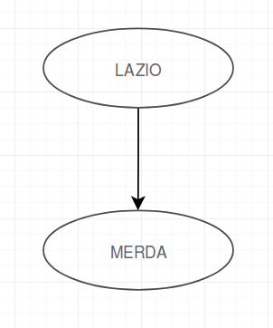
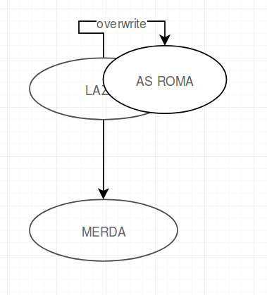
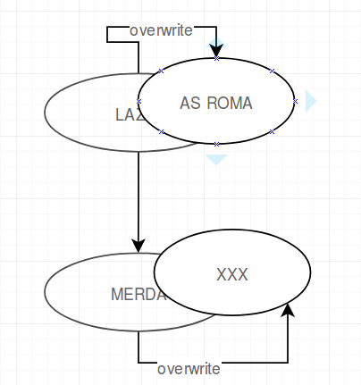

Cypher vs. SQL¶
This article shows why Cypher is superior to plain SQL for information extraction on graphs. We are going to exercise a complete example from storing a graph to retrieving data and calculating some metrics.
Example scenario¶
Imagine someone wrote to the wall ‘Lazio merda’.
Now another person came and erased Lazio and wrote above it ‘AS ROMA’
And in the last step the ‘merda’ was erased.
One could suppose that these three steps were the beginning of the fragment on the left side of the following image, which is part of Sebastian Lasch’s corpus:
Storing the graph¶
Obviously storing a graph in a graph database does not need a lot of setups.
The basics of neo4j can be found here: https://neo4j.com/blog/data-modeling-basics/
Example for adding two connected nodes:
Cypher
CREATE (a:Token {text:"Lazio"})-[:follows]->(b:Token {name:"Merda"})
Under the hood storing a graph in a relational database is not different to the graph database way to do it. But the main difference is that every node stores its own relationships. So no other look up is required to get from Node 1 to neighbouring Node 2.
Most of the graph databases also give the ability document oriented databases have that you don’t have to stick to a given schema. So you don’t have to define exactly at the beginning what attributes a node or an edge should have. (Of course reading the schema dynamically is performance downside)
SQL In SQL you are going to need a basic setup. At least a table with nodes and one with edges.
CREATE TABLE Nodes (
id INT AUTO_INCREMENT,
type VARCHAR(20),
text VARCHAR(100),
PRIMARY KEY(id)
)
CREATE TABLE Edges (
fromNode INT,
toNode INT,
type VARCHAR(20)
)
Now insert the two nodes connected by one edge.
INSERT INTO Nodes (type, text) VALUES ("Token", "Lazio")
INSERT INTO Nodes (type, text) VALUES ("Token", "Merda")
INSERT INTO Edges (type) VALUES ("follows")
We stored the same graph in both databases. Of course there are more differences between the two database systems but for our example this shows enough of a difference.
Retrieving some data¶
In this section comes the big advantage of the graph database. Although relational databases work well on lots of data rows the graph databases are well equipped when it comes to retrieving and analyzing graphs.
Imagine the simple case you just want to get the words that directly follow after “Lazio”:
Cypher
MATCH (a:Token {text:"Lazio"})-[:follows]->(b:Token) RETURN b.text
This will return a list of tokens that followed the nodes called “Lazio”.
SQL
Imagine a first try for this query. It may take us 2 minutes to write it.
SELECT text
FROM Nodes
WHERE id IN (
SELECT toNode
FROM Edges
WHERE fromNode
IN (
SELECT id
FROM Nodes
WHERE text = "Lazio" AND type = "Token"
)
);
This is already a quite long statement for such an easy case. We try to make it shorter and maybe more readable.
After 3 minutes we come up with this query:
SELECT n1.text
FROM Nodes AS n1
INNER JOIN Edges ON n1.id = fromNode
INNER JOIN Nodes AS n2 ON toNode = n2.id
WHERE n1.type = "Token" AND n1.text = "Lazio";
We were able to shorten it but it is still far away from being a one-liner.
Extending the example¶
Now imagine we would like to model the second step from the example scenario. Lazio was overwritten by “AS ROMA”.
Let’s add the new node and a ‘overwritten_by’ relation.
First in Cypher:
MATCH (a:Token {text:"Lazio")) WITH a
CREATE (a)-[:overwritten_by]->(:Token {name:"AS ROMA"})`
Now in SQL (notice how it is not really possible to catch the last insertion ID):
INSERT INTO Nodes (type, text) VALUES ("Token", "AS ROMA");
INSERT INTO Edges (fromNode, toNode, type) VALUES
( (SELECT id FROM Nodes WHERE type = "Token" AND text = "Lazio"),
(SELECT id FROM Nodes WHERE type = "Token" AND text = "AS ROMA"),
"overwritten_by"
);
Querying just a little more¶
Now we would like to see what kind of words are followed visibly by merda. In our example this means that Lazio is not longer the correct answer but AS ROMA is. (Attention: overwriting over overwriting is possible but just the highest text shall be returned.)
After 10 minutes we come up with this.
Cypher
MATCH (a:Token {value:"Merda"})-[:edge {relation_type:"follows"}]-(b:Token)
OPTIONAL MATCH r=(b)-[:edge*{relation_type:"grak"}]-(c)
WITH LAST(relationships(r)) as relatio, b
WITH FILTER(rel in [b, relatio] WHERE rel IS NOT null) as relations
WITH LAST(relations) as relation
WITH relation ORDER BY relation.hand DESC LIMIT 1
MATCH ()-[relation]->(t:Token)
RETURN t;`
This query is not too simple but the problem is neither. Actually to solve such a problem recursive functions are necessary. Take a look at the second row: the asterisk stands for a variable number of hops. This is a powerful feature of neo4j. You can easily match recursive relations or others by adding only an asterisk.
SQL
In SQL we really have to program SQL now. We could write a CTE (common table expression) https://technet.microsoft.com/en-us/library/ms186243(v=sql.105).aspx that provides recursion for that one special query we need.
Or we have a database that supports CONNECT BY.
https://en.wikipedia.org/wiki/Hierarchical_and_recursive_queries_in_SQL
We would really have to get a programmer here to get the analysis going.
Result¶
We modeled a small graph example in SQL and neo4j. We tried to get some data out of it.
RDMS (relational database management systems) and graph databases are concurring in this field. RDMS are much broader, proven to work and really established.
But as we have seen there are cases in which it makes sense to switch to a GraphDB.